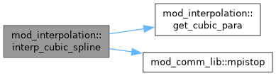
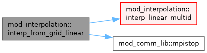
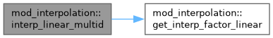

mod_interpolation Module Reference
Functions/Subroutines | |
| subroutine | interp_linear (x_table, y_table, n_table, x_itp, y_itp, n_itp) |
| subroutine | interp_cubic_spline (x_table, y_table, n_table, x_itp, y_itp, n_itp) |
| subroutine | get_cubic_para (xi, yi, ai, bi, ci, di, ni) |
| subroutine | get_interp_factor_linear (xc, xp, factor) |
| subroutine | interp_linear_multid (xc, xp, wc, wp, nwc) |
| subroutine | interp_from_grid_linear (igrid, xp, wp) |
Function/Subroutine Documentation
◆ get_cubic_para()
| subroutine mod_interpolation::get_cubic_para | ( | double precision, dimension(ni) | xi, |
| double precision, dimension(ni) | yi, | ||
| double precision, dimension(ni) | ai, | ||
| double precision, dimension(ni) | bi, | ||
| double precision, dimension(ni) | ci, | ||
| double precision, dimension(ni) | di, | ||
| integer | ni ) |
Definition at line 75 of file mod_interpolation.t.
◆ get_interp_factor_linear()
| subroutine mod_interpolation::get_interp_factor_linear | ( | double precision, dimension(0:1^d&,1:ndim) | xc, |
| double precision, dimension(1:ndim) | xp, | ||
| double precision, dimension(0:1^d&) | factor ) |
Definition at line 138 of file mod_interpolation.t.
◆ interp_cubic_spline()
| subroutine mod_interpolation::interp_cubic_spline | ( | double precision, dimension(n_table) | x_table, |
| double precision, dimension(n_table) | y_table, | ||
| integer | n_table, | ||
| double precision, dimension(n_itp) | x_itp, | ||
| double precision, dimension(n_itp) | y_itp, | ||
| integer | n_itp ) |
Definition at line 42 of file mod_interpolation.t.
Here is the call graph for this function:

◆ interp_from_grid_linear()
| subroutine mod_interpolation::interp_from_grid_linear | ( | integer | igrid, |
| double precision, dimension(1:ndim) | xp, | ||
| double precision, dimension(1:nw) | wp ) |
Definition at line 177 of file mod_interpolation.t.
Here is the call graph for this function:

◆ interp_linear()
| subroutine mod_interpolation::interp_linear | ( | double precision, dimension(n_table) | x_table, |
| double precision, dimension(n_table) | y_table, | ||
| integer | n_table, | ||
| double precision, dimension(n_itp) | x_itp, | ||
| double precision, dimension(n_itp) | y_itp, | ||
| integer | n_itp ) |
Definition at line 8 of file mod_interpolation.t.
◆ interp_linear_multid()
| subroutine mod_interpolation::interp_linear_multid | ( | double precision, dimension(0:1^d&,1:ndim) | xc, |
| double precision, dimension(1:ndim) | xp, | ||
| double precision, dimension(0:1^d&,1:nwc) | wc, | ||
| double precision, dimension(1:nwc) | wp, | ||
| integer | nwc ) |
Definition at line 155 of file mod_interpolation.t.
Here is the call graph for this function:

Generated by